Für Schreiberinnen und Schreiber · eScoresheet 3.2.5
Kurzanleitung für den Schreibertisch
Das ganze offizielle Spiel mit dem OpenVolley eScoresheet, vom ersten Öffnen bis zum fertigen Matchblatt: ein Tablet quer am Schreibertisch, ein Spiel einer Schweizer Liga. Die Teams und Personen auf den Bildern sind erfunden.
1
Erstes Öffnen: Schweiz oder Global
Beim ersten Mal fragt die App «Wie nutzt du OpenVolley?». Wähle «Schweiz» für Spiele der Schweizer Ligen: Anmeldung, Spielliste, Einsatzliste, Vereinskader und die Cloud.
«Global» ist für jedes Turnier oder Freundschaftsspiel: ohne Anmeldung, Spiele und Kader aus Excel. Ändern kannst du das später in den «Optionen», solange kein Spiel auf dem Gerät ist.
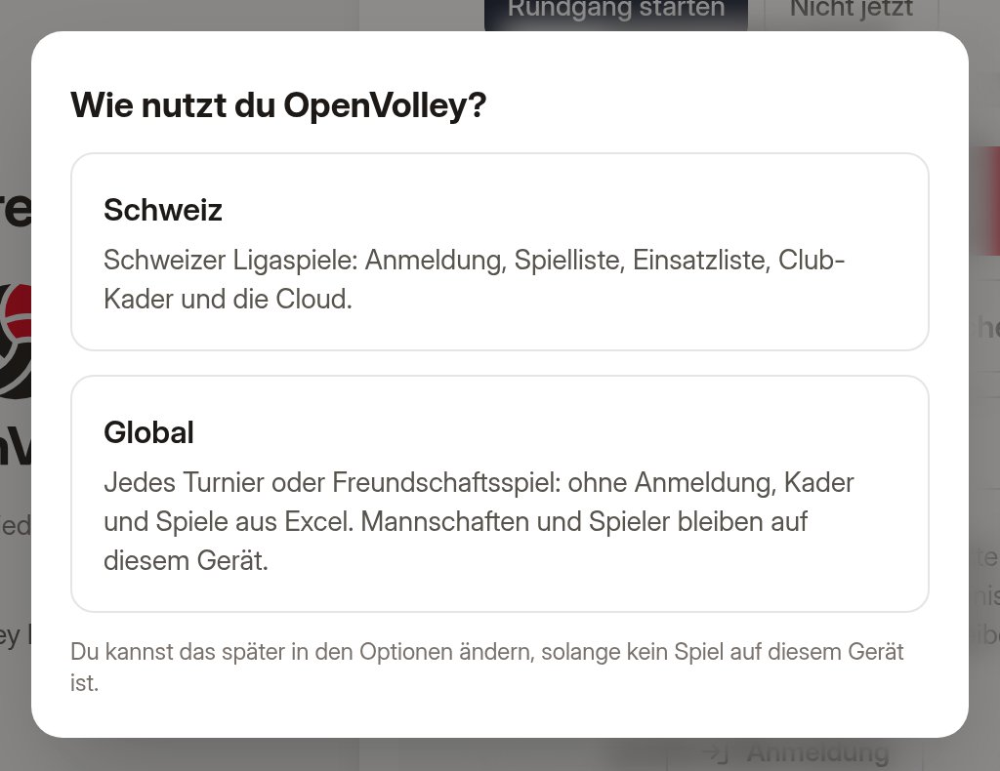
2
Startseite
Jedes Spiel beginnt auf der Startseite. Melde dich mit deinem OpenVolley-Konto an (Menü ☰) und tippe auf «Offizielles Spiel»: Es listet die heutigen Heimspiele deines Vereins.
«Testspiel» ist zum Üben und wird nie auf dem Server gespeichert, «Einfaches Spiel» ist inoffiziell (keine Kader, keine Unterschriften), «Anzeigetafel» zeigt nur Punkte und Sätze. «Spiel fortsetzen» bringt dich zurück zum Spiel auf diesem Gerät.
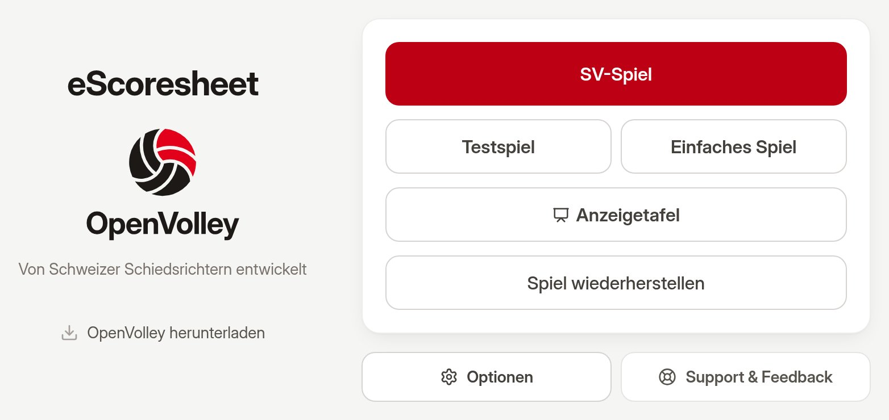
3
Das Spiel aus dem Spielplan laden
Dein Spiel ist nicht in der Liste? Tippe auf «Spiel selbst eingeben», dann auf «Spiel aus dem Spielplan laden». Wähle Geschlecht und Liga, dann dein Spiel.
Die App trägt Spielnummer, Teams, Datum, Zeit, Halle und Schiedsrichter ein. Dafür braucht es Internet.
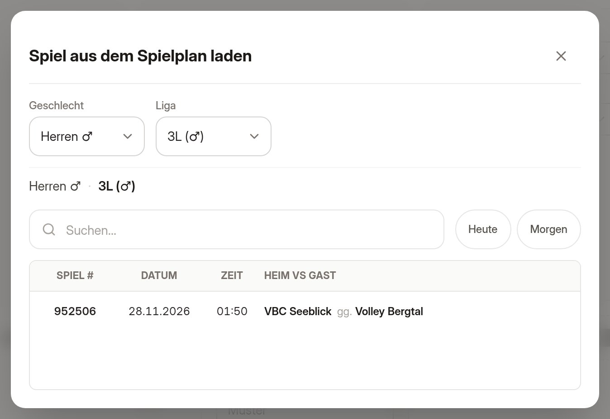
Für Schreiberinnen und Schreiber · eScoresheet 3.2.5
4
Spielinfo und Offizielle
Prüfe die Seite und ergänze, was der Spielplan nicht hat, etwa die Lizenznummer des Schreibers und die Kurznamen der Teams, dann tippe auf «Spiel erstellen». Angemeldet bist du der Schreiber. 1. Schiedsrichter und Schreiber braucht es; 2. Schiedsrichter, Assistenz-Schreiber und Linienrichter sind freiwillig. Jeder Schiedsrichter und jedes Team kann eine E-Mail-Adresse für das endgültige Matchblatt bekommen.
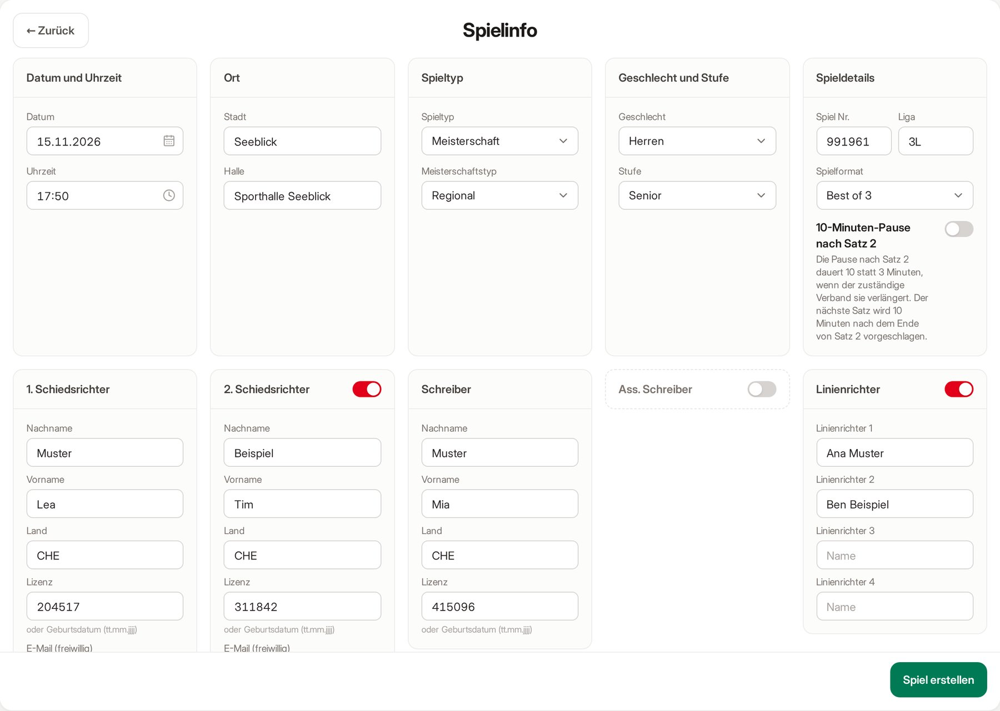
5
Kader
Tippe bei jedem Team auf «Kader bearbeiten». Tippe die Spieler ein, oder tippe auf «PDF hochladen» und wähle das Kader-PDF des Teams oder die Einsatzliste. Markiere den Captain (C) und höchstens zwei Liberos, prüfe Rücken- und Lizenznummern, ergänze die Bankoffiziellen und tippe auf «Bestätigen».
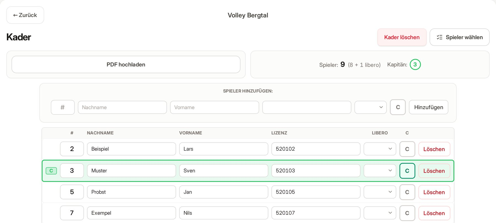
Für Schreiberinnen und Schreiber · eScoresheet 3.2.5
6
Ein vorab geschickter Kader
Ein Teamverantwortlicher kann den Kader des Spiels vorab auf manager.openvolley.app schicken. Die Karte des Teams zeigt dann «Kader von … geschickt»: «Anzeigen» zum Ansehen, «Akzeptieren» zum Laden, «Nicht jetzt» lässt ihn für später.
Prüfe ihn mit dem Coach. Haben Coach und Captain vorab unterschrieben, kommen ihre Unterschriften mit.
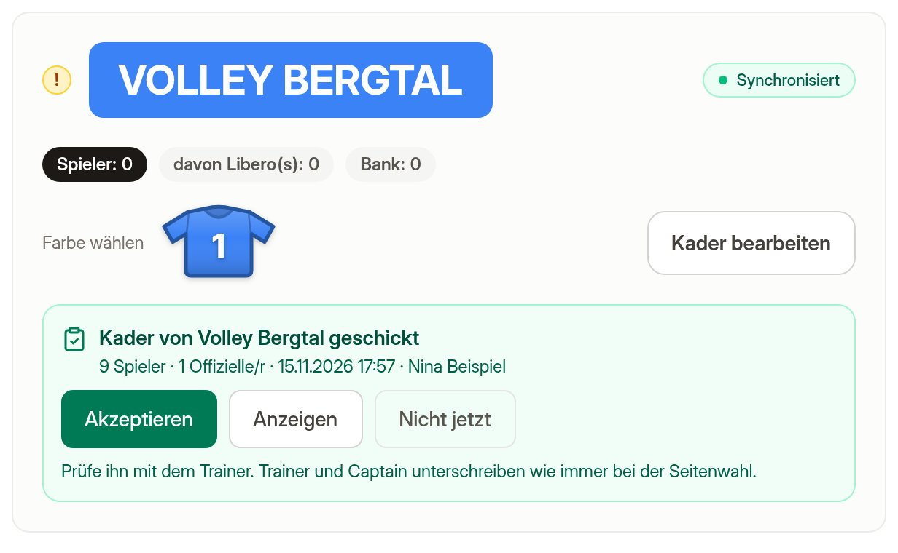
7
Sicherungen und Spiel-PIN
«Sicherungen» oben in der Spieleinrichtung zeigt, wo dieses Spiel gespeichert ist: in der Cloud, solange du angemeldet erfasst, auf diesem Gerät (in Chrome oder Edge mit «Sicherungsordner auswählen») und mit der Desktop-App auf einem USB-Stick. Bewahre die Spiel-PIN auf, sie steht auf der Spielinfo-Seite und auf der Startseite: Du brauchst sie, um das Spiel zu löschen, wiederherzustellen oder auf einem anderen Gerät fortzusetzen.
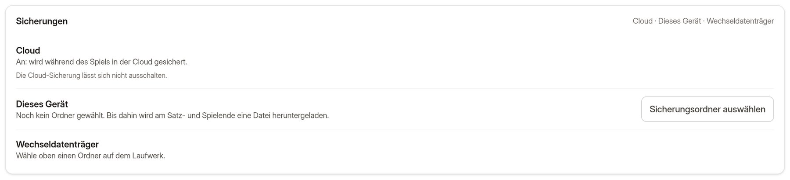
8
Auslosung und Unterschriften
Tippe auf «Auslosung». Lege mit «Seiten wechseln» und «Aufschlag wechseln» die Seiten und den ersten Aufschlag fest, dann tippe auf «Seitenwahl bestätigen».
Captain und Coach jedes Teams unterschreiben: «Unterschrift A» oder «Unterschrift B», dann «Captain» oder «Coach», auf dem Bildschirm oder mit «Auf dem Handy unterschreiben». Sie können auch später unterschreiben, während des Einspielens.
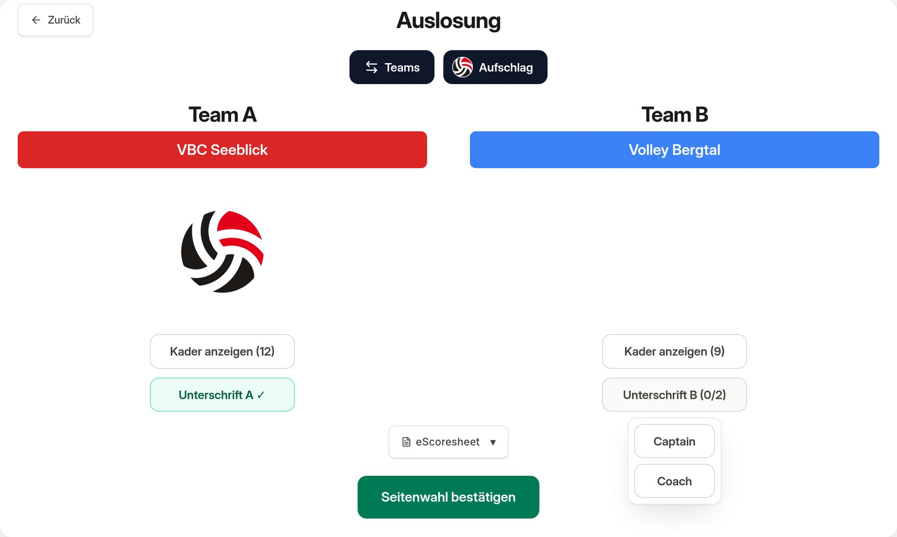
Für Schreiberinnen und Schreiber · eScoresheet 3.2.5
9
Aufstellungen
Tippe auf der Seite jedes Teams auf «Aufstellung», gib die Positionen I bis VI ein und tippe auf «Bestätigen». Die erste Aufstellung bleibt verdeckt («Aufstellung gesetzt»), bis die des anderen Teams da ist. Ein blinkendes «Unterschriften fehlen» heisst: Ein Team hat noch nicht unterschrieben. Tippe darauf, dann unterschreiben sie dort. Satz 1 beginnt erst, wenn alle vier unterschrieben haben.
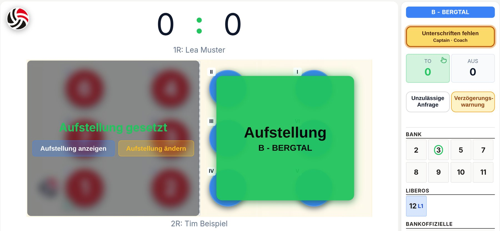
10
Ballwechsel
Tippe vor jedem Aufschlag auf «Ballwechsel starten», dann auf den Punkt-Knopf des Teams, das den Ballwechsel gewonnen hat («Punkt A» oder «Punkt B»). Das Feld «AUFSCHLAG» zeigt die Nummer des Aufschlägers, und die App rotiert ein Team, wenn es den Aufschlag zurückgewinnt. Während eines Ballwechsels wiederholt «Ballwechsel wiederholen» ihn.
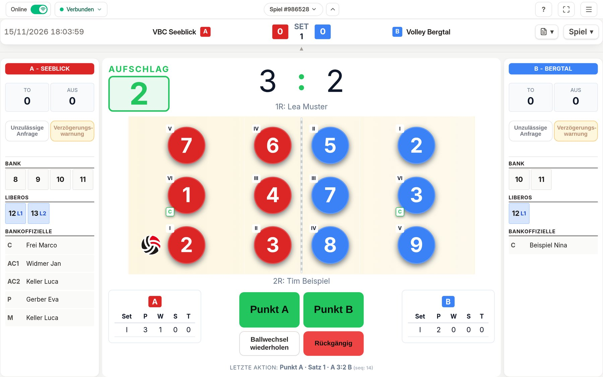
Für Schreiberinnen und Schreiber · eScoresheet 3.2.5
11
Rückgängig und Entscheidungsänderung
«Rückgängig» nimmt den letzten Punkt zurück. Nach einem Punkt gibt «Entscheidungsänderung» ihn dem anderen Team («Dem anderen Team geben») oder wiederholt den Ballwechsel («Ballwechsel wiederholen»); der Dialog zeigt den neuen Spielstand und wer aufschlägt.
Nehmen die Schiedsrichter einen Teil des Satzes zurück, nutze Spiel › «Zurück». Alles andere geht über Spiel › «Korrekturen».
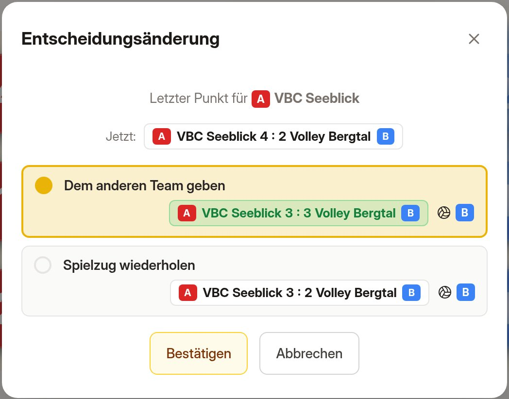
12
Timeouts, Wechsel, Libero, Sanktionen
Timeout: zwischen zwei Ballwechseln auf das «TO»-Feld des Teams tippen, dann «Timeout bestätigen» (30 Sekunden).
Wechsel: den Spieler auf dem Feld antippen, «Auswechslung», dann den Spieler, der hereinkommt.
Libero: einen Spieler der hinteren Reihe antippen, dann «Libero».
Sanktion: den Spieler antippen, dann «Sanktion». Für das Team stehen «Unzulässige Anfrage» und «Verzögerungswarnung» unter seinen Feldern.
Die App prüft die Regeln laufend und fragt nach, bevor sie etwas Ungewöhnliches erfasst.
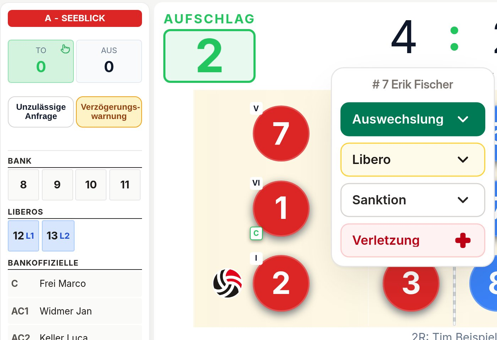
13
Anfragen der Bank
Mit einem Bank-Tablet kann der Coach ein Timeout oder einen Wechsel anfragen oder die Aufstellung schicken. Oben rechts erscheint dann eine Karte.
«Time-out gewähren» oder «Wechseln» öffnet den gewohnten Dialog, «Prüfen und annehmen» die Aufstellung, und «Ablehnen» fragt nach einem Grund, den die Bank sieht. Das Gewähren wartet, solange ein Ballwechsel läuft.
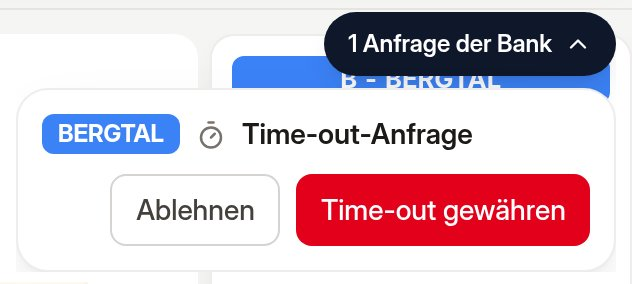
Für Schreiberinnen und Schreiber · eScoresheet 3.2.5
14
Satzende
Bei 25 Punkten mit zwei Punkten Vorsprung beendet die App den Satz: Prüfe Spielstand und Endzeit, dann tippe auf «Bestätigen». War der letzte Punkt falsch, ist «Entscheidungsänderung» noch da.
Danach beginnt die Pause zwischen den Sätzen, mit ihrem Countdown.
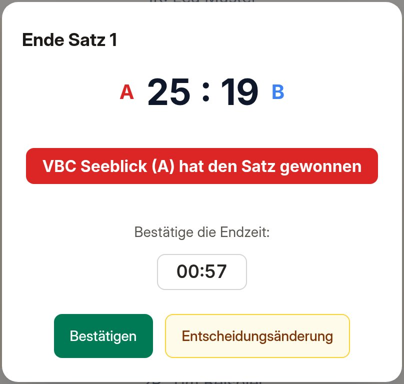
15
Entscheidungssatz
Vor dem Entscheidungssatz (Satz 3 bei Best of 3, Satz 5 bei Best of 5) fragt die App nach einer neuen Auslosung: «Seiten wechseln» und «Aufschlag wechseln», dann «Satz 3 Einrichtung bestätigen».
Der Entscheidungssatz geht auf 15 Punkte; bei 8 Punkten wechseln die Teams das Feld.
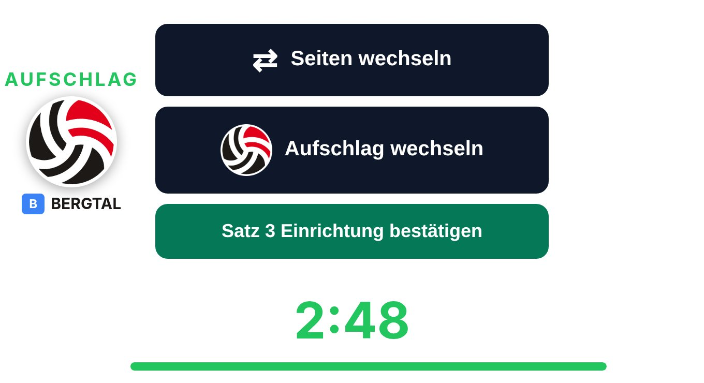
16
Spielende
Prüfe die Resultate und sammle die Unterschriften: zuerst die Captains, dann die Offiziellen («Auf dem Handy unterschreiben» und «Mit PIN genehmigen» gehen auch). Dann tippe auf «Bestätigen und genehmigen»: Die App lädt ein ZIP mit den Spieldaten und dem Matchblatt als PDF herunter und schliesst das Spiel auf dem Server ab. Wo der Verband endgültige Matchblätter verschickt, geht das PDF per E-Mail an den Schreiber, die Schiedsrichter und die Teamkontakte.
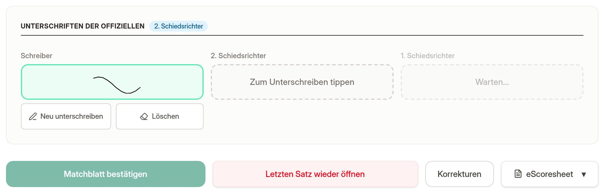
Für Schreiberinnen und Schreiber · eScoresheet 3.2.5
17
Tablets in der Halle
Tippe im Menü (☰) auf «Tablets verbinden». Wähle, wie die Tablets verbinden, schalte jedes Tablet ein und lass es seinen Code scannen. Schiedsrichter- und Bank-Tablets brauchen ihre PIN, das Livescore keine. Der Chip in der Kopfzeile (zum Beispiel 1/3) zeigt, wie viele Tablets verbunden sind.
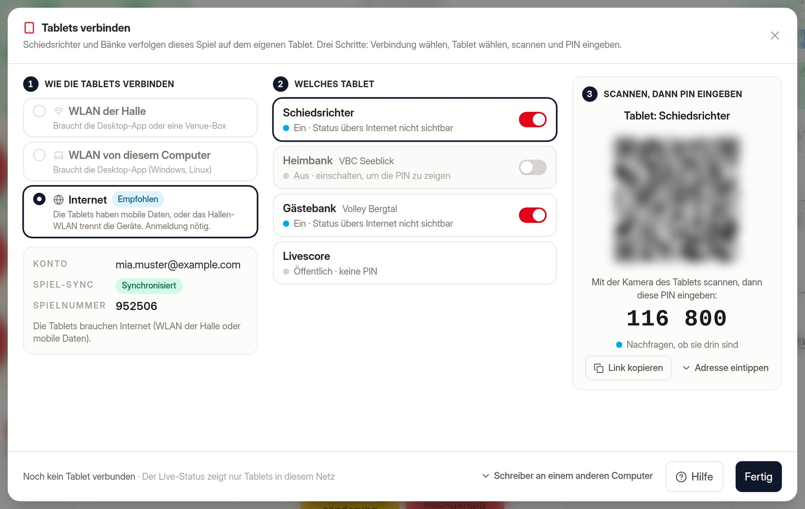
18
Offline, Sicherungen und ein anderes Gerät
Erfassen braucht nie Internet: Jede Änderung wird zuerst auf diesem Gerät gespeichert und gesendet, sobald die Verbindung zurück ist. Die Kopfzeile zeigt den Stand, zum Beispiel «Verbunden» oder «Offline (3 ausstehend)».
Weiter auf einem anderen Gerät: auf der Startseite «Spiel wiederherstellen», Spielnummer und Spiel-PIN eingeben, «Cloud-Backups suchen», dann «Wiederherstellen». Das alte Gerät hört auf zu erfassen. Eine Backup-Datei geht auch («Backup-Datei auswählen»).
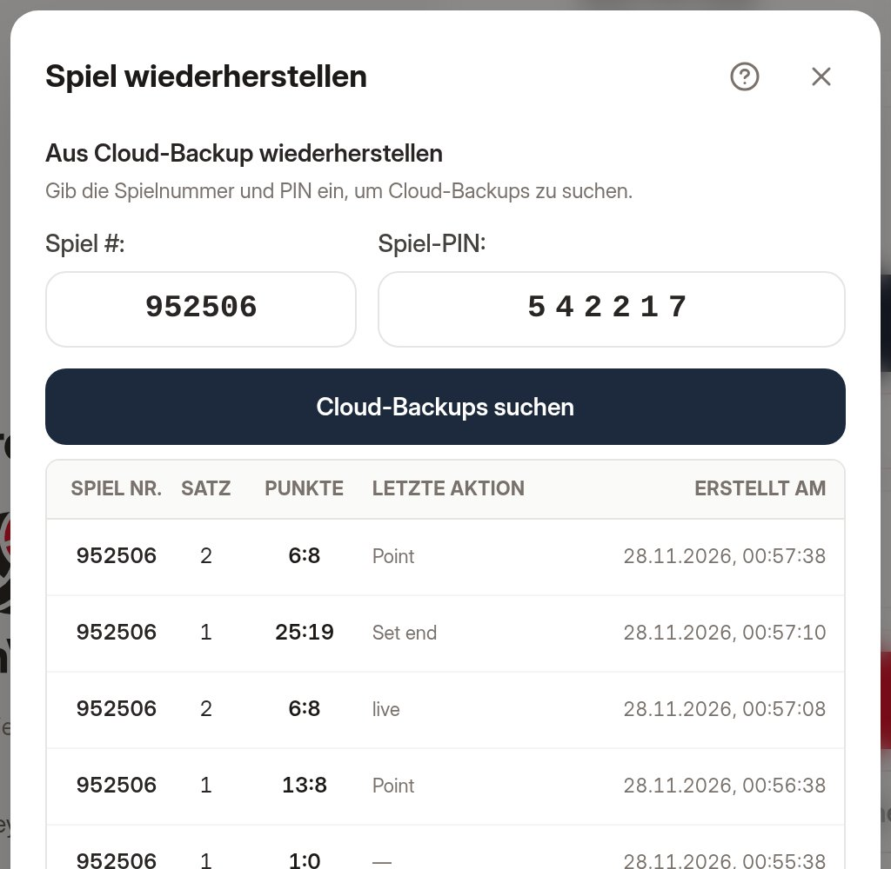
?
Mehr Hilfe
Jeder Bildschirm hat oben ein ?: die Hilfe zu diesem Bildschirm, mit einem kurzen Video und «Zeig mir». Dieselbe Hilfe steht auf Deutsch, Englisch, Französisch und Italienisch auf openvolley.app/support.